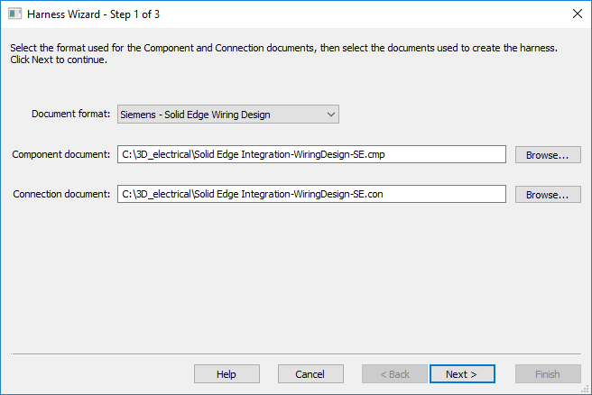
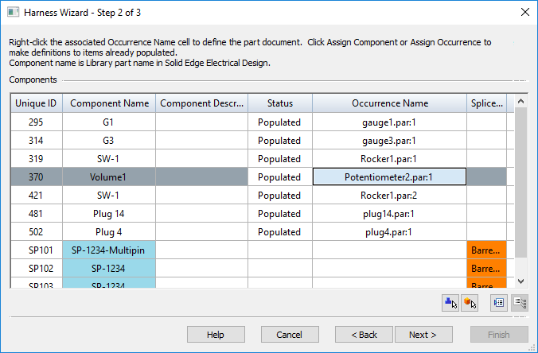
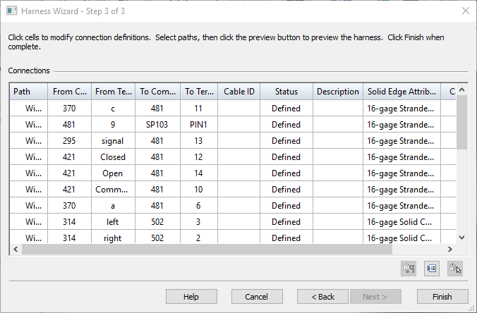
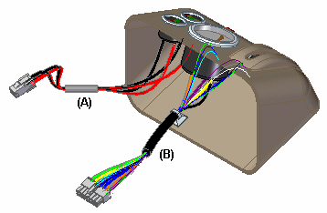

Linking 3D Electrical parts in Wiring Harness
Through 3D Electrical part linking, you can add wiring connections and components into an assembly at the same time, while working in disconnected mode. You use the Harness Wizard to link these 3D electrical parts in the harness assembly.
Solid Edge adds the 3D Electrical Parts folder option to the File Locations page on the Solid Edge Options dialog box, which specifies the location where the 3D electrical components are saved. By default, this location is $:\Program Files\Siemens\Solid Edge 2023 \Training\Wiring Harness, but you can modify the path. If you specify a different folder location, that location must contain the 3D electrical components.
After ensuring that the 3D Electrical Parts folder option is properly set, launch the Harness Wizard and search for the appropriate part based on the component name. In the Document field of the Harness Wizard - Step 1 of 3 dialog box, select Siemens - Solid Edge Wiring design from the drop-down list. After selecting the document, browse to the location for the cmp and con files that were exported through Solid Edge Wiring Design. Once specified, these files are redirected to the 3D Electrical Parts folder location specified in the Solid Edge Options dialog box.

After you click Next on the Harness Wizard - Step 1 of 3 dialog box, the component mapping occurs and the links appear in the Occurrence Name column of the Harness Wizard - Step 2 of 3 dialog box. The components that are not in the folder are highlighted in orange. Manually browse to select the component, and then click Populate to populate all components

After you click Next on the Harness Wizard - Step 2 of 3 dialog box, the Harness Wizard - Step 3 of 3 dialog box displays the connection definitions.

After you click Finish on the Harness Wizard - Step 3 of 3 dialog box, the components and connections are added to the assembly at the same time. You can then use the Assemble command to place the components in the assembly.

How do I
Use Harness Wizard to create a harness designAssign component and terminal names
Edit the definition of a wire harness conductor
Create a Harness report
Learn more
Creating a wire harness automaticallyUsing step 1 of the Harness Wizard
Using step 2 of the Harness Wizard
Using step 3 of the Harness Wizard
Mapping electrical component ids in PathFinder
Look up more details
Harness Wizard commandHarness Populate Options dialog box
Harness Wizard - Step 1 of 3
Harness Wizard - Step 2 of 3
Harness Wizard - Step 3 of 3
Connection Options dialog box
Assign Terminals command
Assign Terminals dialog box
Properties command (Electrical Routing)
Properties dialog box (Electrical Routing)
Custom Attributes dialog box
Edit Definition command (Electrical Routing)
Edit Definition command bar
Harness Reports command
Harness Reports dialog box